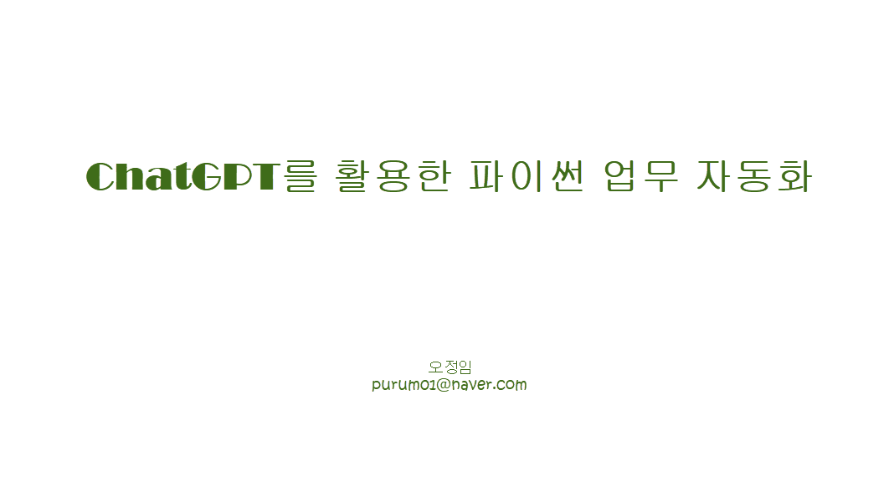

1. 시작하기
업무자동화
개발환경 구축하기
ChatGPT 시작하기
2. 파일 정리하기
PDF 파일 생성하기
파일 월별 정리하기
3. 파일 분석하기
월별 및 연간 데이터 관리
팬데믹 데이터 병합
상권 분석
4. Streamlit 활용하기
Streamlit 준비
Streamlit 사용
5. 워드 다루기
공문 자동생성
Using Streamlit
6. PDF 정보 추출하기
계약 금액 추출
계약자 정보 추출
Using Streamlit
7. 이메일 자동화하기
07_01.ipynb
07_02_streamlit.py
07_03.py
07_04.py
8. OpenAI API
OpenAI API 준비
OpenAI API 사용
Chat Completions
회의록 자동 요약
9. 메시지 분석과 생성하기
광고문구 자동생성
비지니스 인사이트 도출
마케팅 문구 스타일 변환
10. LangChain 요약 자동화하기
LangChain OPENAI
Youtube 요약하기
웹사이트 요약하기
PDF 요약하기
11. 문서 기반 질문응답 시스템 (RAG)
Embedding
PDF기반 응답(ipynb)
PDF기반 응답(py)
Using Streamlit
사내업무 챗봇
사내업무 챗봇(연습문제)
12. 음성 비서 프로그램
문자와 음성 변환
Using Streamlit
13. 참조 사이트
